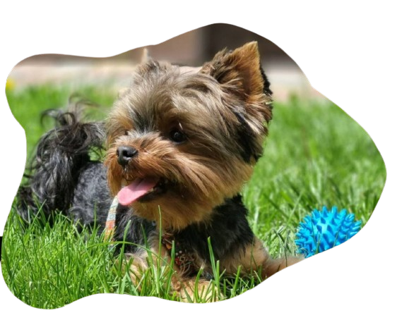

Волонтер для тварин
Ви активна людина, любите тварин, у вас є вільний час і
бажання робити добрі та важливі вчинки — ви можете стати частиною
команди допомоги безхатнім тваринам. Познайомтесь з можливостями
волонтерства. Волонтер — це людина, яка безкоштовно, за власною
ініціативою займається суспільно корисною діяльністю.
